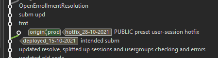
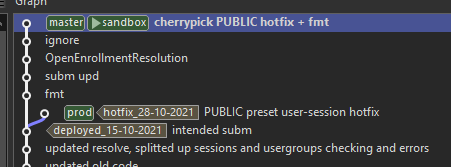
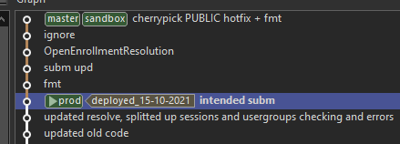
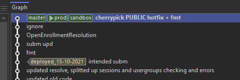

Deployment Procedures(Environments)
dev
Deployments to the dev stage(and all other personal stages) is governed mainly by common sense.
Sometimes you'd deploy local changes, sometimes a full stack deploy, sometimes only one lambda function is deployed.
Just be a good sport and talk to your colleagues before doing something that might influence their workflow.
If you plan to break things and cleanse DB often, try to do it in your own environment.
Each night, our CICD pipeline will redeploy and overwrite the dev stage with code on all master
branches. This exists to catch compile time errors early and reset any personal changes that are not
pushed and exist only on your local repositories.
After a nightly deployment, a jmeter integration test script will be run against the newly deployed stage, in order to catch runtime errors and mistakes early.
More info on this in a later chapter.
sandbox
Do not deploy local and makeshift changes to this stage.
All changes should be deployed from the sandbox branch, having been preliminarily tested by
developers.
Changes should be merged to sandbox from master, and should be fast forward merges only.
Ex: git merge master --ff-only.
prod
Deployment should only be made to prod after the current sandbox version is passed by the QA
team and deemed ready for production, and a right time is found for deployment.
Do not deploying local and makeshift changes to this stage.
Again, deployments are made from the prod branch, which should be merged from sandbox, fast
forward only.
Occasionally, bugs will be found, some will be critical(completely breaks user experience). When that happens, discuss with your leads and determine whether or not this is a bug that warrants immediate action. The goal should be to avoid making makeshift hotfixes, see if it can wait for the next deployment.
In that case that it can't wait, fixes should be made and committed and deployed to prod directly.
This will result in prod having commits that are not on dev nor sandbox, and will look
something like this:

This means the next merge from sandbox to prod cannot be a fast forward. In cases like this,
avoid merging backwards from prod to dev, as that dirties the commit history and creates
confusion. Cherry-pick the change to dev, and in the next production deployment cycle, reset
the prod branch, remove the offending commit, and once again merge from sandbox, fast forward
only. Afterwards, perform a force push to reset the commit history.
Cherry-pick the hotfix:

Reset prod:

Fast forward and force push:
